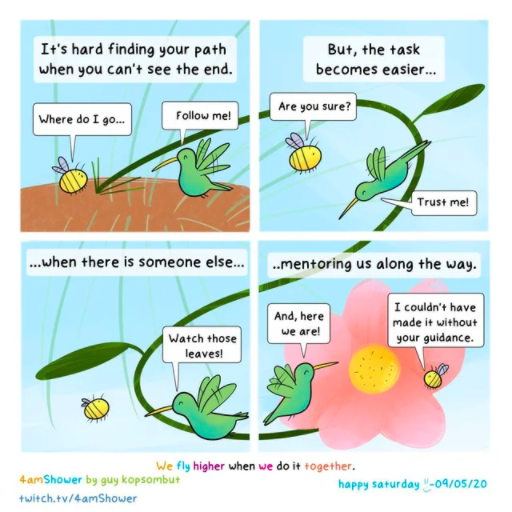
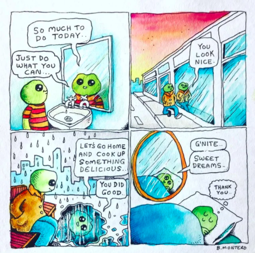

Attempt survivors are people who attempted suicide but, thankfully, did not die. This group of people is at a high risk of trying to harm themselves again unless they receive proper treatment.
Survivors of suicide attempts can undergo great trauma, pain, and are in need of hope. Support survivors, help them to cope and refer them lifelines when needed.
 Hugs and physical interaction greatly increase serotonin levels. Embrace them and let them know that you value them greatly in your lfie: a hug is sometimes more powerful than any words.
Do not make them feel guilty or certer yourself. Empathize with, and check on attempted survivors and loved ones. Always be sure to practice active listening technique and be on the lookout for warning signs (be direct). Have a conversation and get to understand their story, while being understanding.
Talking about suicide can be very difficult. Get them the help they need and always be on the lookout for warning signs. Refer them to lifelines that are always available for chat and counseling for immediate support. Make sure to leave room for yourself as you talk through difficult crises, and speak to a doctor or friend about your feelings if necessary.